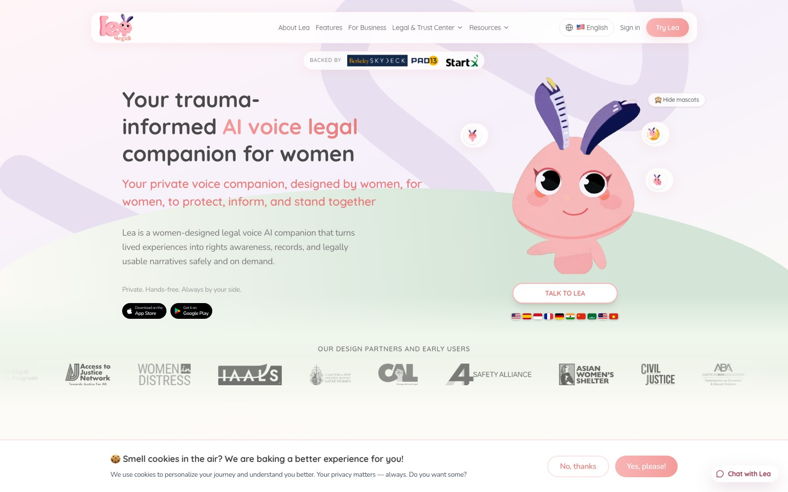
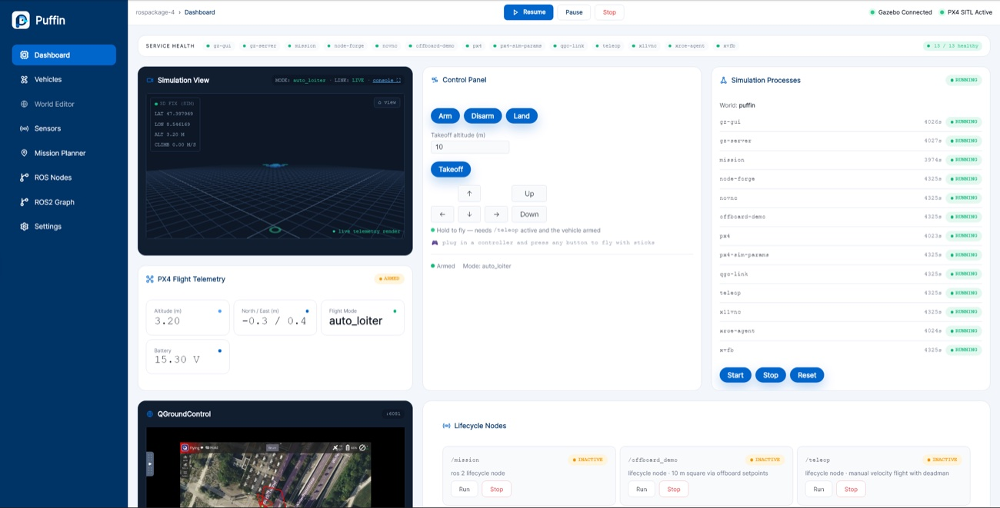

Lotus Foods
Consulting (via FEED)EPR packaging compliance reporting tool
Things I've built
Products I've helped shape, from user research to launch.
Experience
EPR packaging compliance reporting tool

Production pages for an AI-powered legal-tech platform
Personal Projects
How wide receivers' Combine movement translates to getting open, by route type
A community app where people with skin conditions share what products and treatments worked
Class Projects

Browser-based drone simulation dashboard
Butterfly-inspired solar fruit dryer to reduce produce waste (team project; I worked on technology and mechanics)